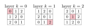

7 Hypergraphs, designs and set families
A $k$-uniform hypergraph, or $k$-graph, has edges of size $k$, and a matching is a set of disjoint edges. Many questions of Section 2 make sense for $k$-graphs. The case $k=3$ already appeared in Section 2.1, where a Latin square became a $3$-partite $3$-graph.
There is also a translation in the opposite direction, from rainbow matchings to ordinary matchings. Given a coloured $k$-graph, add a new vertex for each colour, and add to every edge the vertex of its colour. Two edges of the same colour now share a vertex. So a rainbow matching of the original $k$-graph is exactly a matching of the new $(k+1)$-graph (Figure 30). The new hypergraph is $(1,k)$-partite: each edge has one colour vertex and $k$ original vertices. Many results below are proved in this form [202,106].
Some things change when the uniformity grows. For graphs, $n$ matchings of size $n$ are conjectured to have a rainbow matching of size $n-1$ (Section 2.10). For $k$-graphs with $k\geq3$ this fails by a growing amount (Section 7.2), and the number of matchings needed for a full rainbow matching becomes polynomial of degree $k$ (Section 7.1).
7.1 How many matchings force a rainbow matching?
Drisko's theorem (Theorem 2.35) says that $2t-1$ matchings of size $t$ in a bipartite graph have a rainbow matching of size $t$, and that $2t-2$ are not enough. Aharoni and Berger [2] asked the same question for $r$-partite $r$-graphs. They found $2^{r-1}(t-1)$ matchings of size $t$ with no rainbow matching of size $t$, and conjectured that one more matching always suffices.
Alon [22] disproved this through a problem in additive number theory. Erdős, Ginzburg and Ziv proved that any $2t-1$ integers contain $t$ whose sum is divisible by $t$. Harborth asked the same for vectors: how long must a sequence in $\mathbb{Z}_t^{d}$ be to contain $t$ terms summing to zero? Alon turned a sequence in $\mathbb{Z}_t^{r-1}$ with no such $t$ terms into a family of perfect matchings of an $r$-partite $r$-graph with parts $A_1,\dots,A_r$, each a copy of $\mathbb{Z}_t$. The vector $s$ gives the matching with edges $(s_1+i,\dots,s_{r-1}+i,i)$ for $i\in\mathbb{Z}_t$. A rainbow matching of size $t$ covers every vertex of every part, and summing coordinates shows that the $t$ vectors used would sum to zero. Hence a zero-sum-free sequence of length $\ell$ gives $\ell$ matchings with no rainbow matching of size $t$ (Figure 31). Known constructions for Harborth's problem beat $2^{r-1}(t-1)$, for example when $t\geq3$ is odd and $r\geq4$.
Alon asked whether the number of matchings needed is still linear in $t$ for fixed $r$, as the Erdős–Ginzburg–Ziv constants are; Glebov, Sudakov and Szabó conjectured that it is. Pohoata, Sauermann and Zakharov showed that it is not.
For every fixed $r\geq3$ there are $c_r,C_r>0$ such that the following holds for every $t\geq2$. Some family of $c_rt^r$ matchings of size $t$ in an $r$-partite $r$-graph has no rainbow matching of size $t$, while any $C_rt^r$ matchings of size $t$ in any $r$-graph have a rainbow matching of size $t$.
So the answer is of order $t^r$, far from the linear behaviour of zero-sum problems. The upper bound improves a bound of order $t^{r+1}$ due to Munhá Correia, Sudakov and Tomon. The fractional version behaves differently: Aharoni, Holzman and Jiang [9] showed that any $\lceil rn\rceil$ families of edges of an $r$-graph, each with a fractional matching of size $n$, have a rainbow fractional matching of size $n$.
7.2 Near-full rainbow matchings
The Ryser–Brualdi–Stein question asks how large a rainbow matching $n$ matchings of size $n$ must have. Let $g(r,n)$ be the largest size guaranteed in an $r$-partite $r$-graph, and $g'(r,n)$ the same without the partite condition. For $r=2$ the conjecture is $g(2,n)=g'(2,n)=n-1$ (Section 2.10). For larger $r$ the deficit grows with $n$.
For every fixed $r\geq3$ and sufficiently large $n$, \[ \frac{2n}{r+1}-O_r(1)\leq g'(r,n)\leq g(r,n)\leq n-\Omega_r\bigl(n^{1-1/r}\bigr). \]
Previously Aharoni, Charbit and Howard had shown $g(r,n)\leq n-2^{r-2}$ for even $n$, a constant deficit. The upper bound shows that no statement of the form $n-O(1)$ holds. The lower bound is far from it, and the authors suspect that the truth is close to the upper bound.
The same question can be asked the other way round, as for graphs in Section 2.10: how large must $n$ matchings be to force a rainbow matching of size $n$? Let $h(r,n)$ be the smallest $s$ such that any $n$ matchings of size $s$ in an $r$-partite $r$-graph have a rainbow matching of size $n$, and $h'(r,n)$ the same without the partite condition. For $r\geq3$, Bowtell, Freschi, Kronenberg and Yan showed that $h(r,n)\geq n+\Omega_r(n^{1-1/r})$, so here too the deficit grows, and that $h'(r,n)\leq(r+1)n/2+o(n)$. They conjectured that all four quantities are asymptotically $n$.
For every fixed $r\geq2$, each of $g(r,n)$, $g'(r,n)$, $h(r,n)$ and $h'(r,n)$ is $(1+o(1))n$.
For $g$ the lower bound $2n/(r+1)$ in Theorem 7.2 refines an argument of Aharoni, Charbit and Howard, and the authors expect that a significantly more complicated strategy is needed to reach $n-o(n)$.
Another way to obtain full rainbow matchings is to bound degrees. Let $G$ be an $r$-graph with maximum degree $\Delta$ whose edges are coloured with $n$ colours. A topological Hall-type theorem of Aharoni, Berger and Meshulam shows that if every colour class has at least $r\Delta$ edges, then there is a full rainbow matching, one edge of each colour [266]. Wdowinski [266] showed that $r\Delta$ cannot be lowered to $r\Delta-1$, using blow-ups of nets from design theory. If the codegrees of $G$ and the degrees of the colour classes are $o(\Delta)$, then colour classes of size $(1+o(1))\Delta$ suffice, by a theorem of Delcourt and Postle [106]. They conjectured that for properly coloured multigraphs $\Delta+1$ edges per colour suffice in the bipartite case and $\Delta+2$ in general, as sparse analogues of the Aharoni–Berger and Gao–Ramadurai–Wanless–Wormald conjectures. Wdowinski disproved both, even when the chromatic index is $\Delta$. The original conjectures, about $n$ colours in Section 2.10, are not affected.
Wdowinski's constructions suggest measuring colour classes against the chromatic index $\chi'$ rather than the maximum degree. He asks whether, in a proper colouring of a multigraph with chromatic index $\chi'$, colour classes of size $(1+o(1))\chi'$ always give a full rainbow matching, and whether even $\chi'+C$ suffices for a constant $C$ [266]. The theorem of Delcourt and Postle gives the first statement when edge multiplicities are $o(\Delta)$. His constructions rule out $C=2$ in general and $C=1$ for bipartite multigraphs, but not larger constants.
7.3 List edge-colouring
Full rainbow matchings also encode list edge-colouring. Let $H$ be a hypergraph in which each edge $e$ has a list $L(e)$ of allowed colours. For every edge $e$ and colour $a\in L(e)$, take the edge $\{(v,a):v\in e\}$ in a new hypergraph, and give it the colour $e$. Two of these edges meet exactly when they come from edges of $H$ that share a vertex and receive the same colour $a$. So a proper colouring of $H$ from the lists is the same as a full rainbow matching of the new hypergraph, which uses one edge of each colour $e$ (Figure 32).
The list edge-colouring conjecture asserts that the list chromatic index of every multigraph equals its chromatic index. Galvin proved it for bipartite multigraphs, which settled Dinitz's problem on Latin squares (Section 3.6). Kahn proved it asymptotically for multigraphs, and showed that a $k$-graph with maximum degree $\Delta$ and codegrees $o(\Delta)$ has list chromatic index $(1+o(1))\Delta$. Through the translation, the theorems of the previous subsection give colour-degree versions [266]. Let the colour degree of a colour $a$ be the maximum degree of the edges whose lists contain $a$, and let $\Delta$ be the largest colour degree. If every list has at least $r\Delta$ colours, a proper colouring from the lists exists; if codegrees are small, $(1+o(1))\Delta$ colours suffice. Galvin's theorem does not extend in this way: Wdowinski found bipartite graphs with maximum colour degree $\Delta$ and lists of size $\Delta$ that have no proper colouring from the lists.
The chromatic-index version of the previous question has a list form. For a colour $a$, let $H_a$ be the graph of edges whose lists contain $a$, and let $\chi'$ be the largest chromatic index of the $H_a$. Wdowinski asks whether lists of size $(1+o(1))\chi'$, or even $\chi'+C$, always allow a proper colouring from the lists [266]. A positive answer to the matching question would give one here. Every $H_a$ is a subgraph of $H$, so a positive answer with $\chi'+C$ would give the list edge-colouring conjecture up to an additive constant. His bipartite examples show that $C=0$ is not enough. He singles out bipartite multigraphs as the case of particular interest.
7.4 Families of sets
The Erdős matching conjecture concerns $k$-element subsets of $[n]$, where $n\geq km$. It asserts that a family with no $m$ disjoint sets has at most \[ f(n,m,k)=\max\left\{\binom{n}{k}-\binom{n-m+1}{k},\ \binom{km-1}{k}\right\} \] members. The two terms come from all sets meeting $[m-1]$ and from all $k$-subsets of $[km-1]$. The case $m=2$ is the Erdős–Ko–Rado theorem. The rainbow version asks for disjoint sets taken one from each of $m$ families.
Let $n\geq km$. If $\mathcal F_1,\dots,\mathcal F_m$ are families of $k$-element subsets of $[n]$, each with more than $f(n,m,k)$ members, then there are pairwise disjoint sets $F_1\in\mathcal F_1,\dots,F_m\in\mathcal F_m$.
Taking all families equal shows that the rainbow conjecture contains the Erdős matching conjecture. Huang, Loh and Sudakov proved it for $n>3k^2m$. Keller and Lifshitz proved it for $n\geq f(m)k$, Frankl and Kupavskii for $n=\Omega(km\log m)$, and Lu, Wang and Yu for $n\geq 2km$ and $n$ sufficiently large (see [129]). For $k=3$, Gao, Lu, Ma and Yu [129] proved the conjecture for all sufficiently large $n$. Huang, Li and Wang [158] proved a version for properly coloured hypergraphs. Below $2km$ the conjecture contains the open cases of the Erdős matching conjecture, so a complete answer there would also settle those.
In the $r$-partite setting, with families of $r$-tuples from $[n]^r$, the extremal number is $(m-1)n^{r-1}$: take all tuples whose first coordinate lies in $[m-1]$. Aharoni and Howard [10] conjectured that $m$ families of more than $(m-1)n^{r-1}$ tuples always contain a rainbow matching, and proved it for $r\leq3$. Lu and Yu [206] proved it for $n\geq3(r-1)(m-1)$, and Kiselev and Kupavskii [179] for every $m\geq470$. The question has since moved to unequal sizes: for which sequences $f_1,\dots,f_m$ do the conditions $|\mathcal F_i|>f_i$ force a rainbow matching [188]? Kupavskii and Popova call such sequences satisfying. For $r=1$ a sequence $f_1\leq\dots\leq f_m$ is satisfying exactly when $f_i\geq i-1$ for every $i$. Already the case $r=2$ is open. There the families are sets of edges of $K_{n,n}$, and the question asks which edge counts of $m$ bipartite graphs on the same two parts force a rainbow matching of size $m$. Kupavskii and Popova propose describing all satisfying sequences for $r=2$ as the next step. They expect it to give insight for all $r$ and large $n$, and they also ask for the analogue for $k$-subsets of $[n]$, which they expect to be much harder.
7.5 Maximin share allocations
Rainbow matchings of set families appear in fair division, in a different way from the rainbow cycles of Section 6.3. Suppose that $m$ indivisible items are to be split among $n$ agents. The maximin share of an agent is the largest value it can guarantee by splitting the items into $n$ bundles itself and receiving the worst one. An allocation is an MMS allocation if every agent receives a bundle it values at least at its maximin share.
Consider items as vertices and agents as colours. For each agent, the bundles it accepts are edges of its colour; its own optimal split is a perfect matching of its colour. An MMS allocation is then a rainbow matching that uses every colour. For goods with monotone valuations the leftover items can be handed out freely, so the question becomes the following. Every hypergraph on $m$ vertices with $n$ perfect matchings of $n$ edges each, in $n$ different colours, should have a rainbow matching with $n$ edges. For which $m$ does this hold? With $m=4$ and $n=2$ it can fail (Figure 33).
Feige determined the answer up to the constant in the error term.
Let $\mu(n)$ be the largest $m$ such that every instance with $n$ agents with monotone valuations and at most $m$ goods has an MMS allocation. Then $\mu(n)=n+\Theta(\log n)$.
The same holds for chores, where the matching is replaced by a rainbow cover, while for arbitrary valuations $\mu(n)=\log n+O(1)$. In the language of hypergraphs, the theorem says how many vertices beyond $n$ make rainbow matchings unavoidable. With logarithms to base $2$, Feige shows that the constant in $\Theta(\log n)$ lies between $0.93-o(1)$ and $1+o(1)$ for goods, and asks whether $\mu(n)=n+\log n+o(\log n)$. Pinning it down reduces to a question about hypergraphs on $c+d$ vertices: how many colours of $d$-matchings, each edge of size at least $2$, force a rainbow $d$-matching for every $d\leq c$? The known answers lie between $(2-o(1))^c$ and $(2.0922+o(1))^c$.
7.6 Perfect matchings and Hamilton cycles in hypergraph collections
Collections of $k$-graphs are defined as for graphs (Section 3.7). A rainbow perfect matching of $k$-graphs $H_1,\dots,H_{n/k}$ on a common set of $n$ vertices consists of disjoint edges $e_i\in H_i$ covering all vertices. For $1\leq\ell<k$, the minimum $\ell$-degree $\delta_\ell(H)$ is the least number of edges containing an $\ell$-set of vertices. Let $\delta(n,k,\ell)$ be the largest minimum $\ell$-degree of an $n$-vertex $k$-graph with no perfect matching. Taking all $H_i$ equal to such an extremal $k$-graph gives no rainbow perfect matching, so the uncoloured threshold is a lower bound. For $\ell\geq k/2$ it is exact.
Let $k\geq3$ and $k/2\leq\ell\leq k-1$. For sufficiently large $n$ divisible by $k$, if $H_1,\dots,H_{n/k}$ are $k$-graphs on a common set of $n$ vertices with $\delta_\ell(H_i)>\delta(n,k,\ell)$ for every $i$, then they have a rainbow perfect matching.
The case $\ell=k-1$ is due to Lu, Wang and Yu [202], whose proof introduced the $(1,k)$-partite form of the colour-vertex translation. For $\ell<k/2$ even the uncoloured thresholds are not known in general. For vertex degrees, rainbow versions of the uncoloured thresholds are known for $k=3$ and $k=4$ [207,203].
For Hamilton cycles in $k$-graphs, a tight cycle has consecutive edges meeting in $k-1$ vertices, and a loose cycle has consecutive edges meeting in one vertex. The minimum $(k-2)$-degree threshold for a tight Hamilton cycle is $(5/9+o(1))\binom{n}{2}$, and Tang, Wang, Wang and Yan [258] proved the rainbow version: $n$ $k$-graphs on a common $n$-vertex set, each with $\delta_{k-2}\geq(5/9+\gamma)\binom n2$, have a rainbow tight Hamilton cycle. The general framework of Gupta, Hamann, Müyesser, Parczyk and Sgueglia (Section 5.5) shows that Hamilton $\ell$-cycles are colour-blind in several further ranges [149].
Tang, Wang, Wang and Yan [258] conjectured that tight Hamilton cycles are colour-blind for every degree type. Write $h_d(k,n)$ for the minimum $d$-degree threshold for a tight Hamilton cycle in an $n$-vertex $k$-graph.
For all $1\leq d\leq k-1$ and $\mu>0$ there is $n_0$ such that, for $n\geq n_0$, every collection of $n$ $k$-graphs on a common set of $n$ vertices, each with minimum $d$-degree at least $h_d(k,n)+\mu n^{k-d}$, has a rainbow tight Hamilton cycle.
For $d=k-2$ this is their theorem. For most other $d$ the uncoloured threshold $h_d(k,n)$ is itself unknown; Lang and Sanhueza-Matamala conjectured its value, which for $d=k-3$ is $(5/8+o(1))\binom n3$. The rainbow statement for $d=k-3$ at this value is the first open case Tang, Wang, Wang and Yan single out.
7.7 Bounded colourings
For a single coloured $k$-graph, the theorems of Section 5.4 have hypergraph analogues. Two bounds are needed for factors. A global bound is needed because a factor has many edges. A local bound is needed as well: colour each edge of the complete $k$-graph by its $k-1$ smallest vertices. Every colour then has fewer than $n$ edges, but any copy of the complete $k$-graph $K^{(k)}_{k+1}$ has two edges with the same smallest $k-1$ vertices, so there is no rainbow $K^{(k)}_{k+1}$-factor. Call a colouring of an $n$-vertex $k$-graph $\mu$-bounded if each colour has at most $\mu n^{k-1}$ edges, and each $(k-1)$-set lies in at most $\mu n$ edges of each colour.
Let $1\leq\ell<k$, let $F$ be a $k$-graph on $h$ vertices, and let $\varepsilon>0$. There is $\mu>0$ such that for large $n$ divisible by $h$, every $k$-graph $G$ on $n$ vertices with $\delta_\ell(G)\geq(\delta^*_\ell(F)+\varepsilon)n^{k-\ell}$ has a rainbow $F$-factor in every $\mu$-bounded colouring. Here $\delta^*_\ell(F)$ is the asymptotic $\ell$-degree threshold for an $F$-factor.
The theorem holds even where $\delta^*_\ell(F)$ is not known. Coulson, Keevash, Perarnau and Yepremyan conjectured more generally that above the threshold for any spanning structure, a suitably bounded colouring contains a rainbow copy. Kathapurkar, Morris and Perarnau verified this for loose Hamilton cycles, with only a global bound.
Let $1\leq j<k$ and $\varepsilon>0$. There is $\mu>0$ such that for large $n$ divisible by $k-1$ the following holds. If $G$ is an $n$-vertex $k$-graph with $\delta_j(G)$ at least $\varepsilon n^{k-j}$ above the $j$-degree threshold for a loose Hamilton cycle, then every colouring of $G$ with at most $\mu n^{k-1}$ edges of each colour has a rainbow loose Hamilton cycle.
Tight cycles behave differently. Kathapurkar, Morris and Perarnau gave $3$-graphs above the codegree threshold for tight Hamilton cycles, with colour classes of only linear size, and with no rainbow tight Hamilton cycle. Split the vertices into three nearly equal parts $V_1,V_2,V_3$, give every pair inside a part its own colour, and let the edges be the triples with exactly two vertices in one part, coloured by that pair. Each colour has at most $n$ edges. Following a tight Hamilton cycle until it first enters $V_3$, one finds two consecutive edges sharing a pair inside $V_1$ or $V_2$, hence of the same colour (Figure 34).
So for tight Hamilton cycles some local bound is necessary, and the right bounds may depend on the minimum degree. Kathapurkar, Morris and Perarnau propose determining which combinations of local and global bounds force a rainbow tight Hamilton cycle above the degree threshold. For tight cycles no positive result in Dirac hypergraphs is known, and their switching method seems to break down. Even the complete $k$-graph is not understood. Dudek, Frieze and Ruciński found rainbow tight Hamilton cycles there when every colour has $o(n)$ edges. They asked whether some colouring with $\Theta(n)$ edges of each colour has none, and believe that it does (see [169]). Alternatively, a global bound of $o(n^{k-1})$ might already suffice, as it does for loose cycles in Theorem 7.9; the construction of Figure 34 shows that this fails in some range of minimum degree. For factors, the local bound in Theorem 7.8 is needed for $F=K^{(k)}_{k+1}$, but the method of Kathapurkar, Morris and Perarnau removes it when $F$ is linear, that is, when two edges of $F$ share at most one vertex. Which $F$ need a local bound is open.
In complete hypergraphs properness is enough for perfect matchings. Li and Xu [196] showed that every proper colouring of the complete $r$-graph on $rn$ vertices, with $r\geq2$ and $n\geq3$, contains a rainbow perfect matching, extending a result of El-Zanati et al. for $1$-factorisations.
7.8 Random hypergraphs
Ferber and Krivelevich [123] used a coupling argument of McDiarmid to transfer embedding results to random colourings. In a random $k$-graph whose edges are coloured uniformly with $(1+o(1))e(S)$ colours, a rainbow copy of a spanning hypergraph $S$ appears at the threshold for an uncoloured copy, up to a constant factor. With exactly as many colours as edges, Dudek, English and Frieze [113] showed that $p=e^2/n$ is the sharp threshold for a rainbow tight Hamilton cycle in the random $k$-graph coloured with $n$ colours, for every $k\geq4$. The rainbow threshold theorem of Section 5.8 gives rainbow Hamilton $\ell$-cycles with an exact palette up to a logarithmic factor [152].
7.9 Designs and Latin hypercubes
A Latin hypercube of dimension $d$ and order $n$ is an $n\times\dots\times n$ array of dimension $d$, filled with $n$ symbols, in which every line obtained by varying one coordinate contains each symbol once. For $d=2$ this is a Latin square. A transversal is a set of $n$ entries, no two agreeing in any coordinate or in their symbol. Translated as in Section 2.1, a Latin hypercube is a $(d+1)$-partite $(d+1)$-graph, with a part for each coordinate and one for the symbols, and a transversal is a perfect matching (Figure 35).

As for Latin squares, the cyclic hypercube with entries $x_1+\dots+x_d$ modulo $n$ has no transversal when $n$ and $d$ are both even [88]. The analogue of Ryser's conjecture says that parity is the only obstruction.
If $n$ or $d$ is odd, then every Latin hypercube of dimension $d$ and order $n$ has a transversal.
For $d=2$ this is Ryser's conjecture (Conjecture 2.9). It is known for orders $n\leq5$. For even $n$ and $d$, there are superexponentially many species of Latin hypercubes without transversals. Child and Wanless constructed, for even $d$, hypercubes that have transversals but in which every transversal meets one fixed $(d-2)$-dimensional subarray, for every even $n\geq10$.
Child and Wanless [88] suggest that for $d>2$ something much stronger than Conjecture 7.10 may hold. Call a Latin hypercube a confirmed bachelor if some entry lies in no transversal. Among the Latin hypercubes of dimension $d>2$ enumerated by computer, confirmed bachelors occur only for $n=d=4$, and none is known when $n$ or $d$ is odd. Decompositions into transversals appear to be common. These data are consistent with every entry of every Latin hypercube lying in a transversal whenever $d>2$ and $n$ or $d$ is odd. In the other direction, Ghafari and Wanless found Latin squares with transversals in which asymptotically more than half of the entries lie in no transversal. Child and Wanless ask whether, in higher dimensions, a fixed positive proportion of entries can avoid all transversals; their confirmed bachelors of order $4$ achieve only an exponentially small proportion.
Coloured decompositions also arise in design theory. Keevash's general theory of designs covers decompositions of hypergraphs whose edges carry colours. Among his examples is a rainbow triangle decomposition theorem [172]. Let $G$ be a graph whose edges are coloured with $D\geq4$ colours, all of whose degrees are even and with $3\mid e(G)$. If $G$ is typical in a quasirandom sense, and every colour class has density below one third of the density of $G$ but not too small, then $G$ decomposes into rainbow triangles. Divisibility is necessary even without colours, and the colours impose no further divisibility condition. Such decompositions encode problems of design theory such as Whist tournaments.